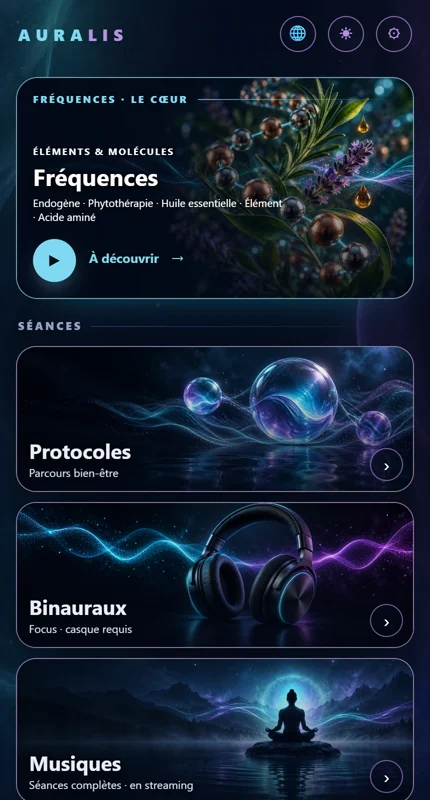

Version web
Toute l'application Auralis dans votre navigateur : fréquences, protocoles, binauraux, musiques, chakras et géométrie sacrée. Rien à installer.
29,99 $ / an, taxes en sus
Renouvellement automatique chaque année · annulable en tout temps · 2 appareils

Le même contenu que l'application mobile, mis à jour en continu.
Plus de 150 fréquences calculées à partir de molécules et d'éléments : endogènes, phytothérapie, huiles essentielles, éléments, acides aminés.
Des parcours bien-être prêts à l'emploi, minutés, qui enchaînent les fréquences pour vous.
Des battements binauraux par catégorie, accompagnés de musique. Un casque est requis.
Des séances musicales complètes accordées en 432 Hz, à écouter en continu.
Les 7 centres, chacun avec sa fréquence, pour la durée de votre choix.
Un espace contemplatif : figures sacrées, crop circles, planètes, couleurs et flocons, chacun avec sa propre musique.
Trois étapes, aucun mot de passe à retenir.
Nous vous envoyons un code à 6 chiffres pour vous connecter.
Paiement sécurisé par Stripe. Votre carte n'est jamais conservée chez nous.
L'application s'ouvre dans votre navigateur, sur votre ordinateur ou votre tablette.
Votre abonnement peut être connecté sur 2 appareils. Une connexion sur un 3ᵉ appareil déconnecte le plus ancien.
L'abonnement se renouvelle automatiquement chaque année. Vous pouvez l'annuler en deux clics depuis la page Mon compte ; vous gardez l'accès jusqu'à la fin de l'année payée.
Un navigateur récent (Chrome, Edge, Safari ou Firefox) et une connexion Internet. Des écouteurs ou un casque pour les binauraux.
L'abonnement web est indépendant des abonnements souscrits dans l'App Store ou Google Play.
Écrivez-nous à auralis432@gmail.com.
29,99 $ par an, taxes en sus. Annulable en tout temps.
M'abonnerAuralis est un outil de bien-être et de détente. Ce n'est pas un dispositif médical : il ne diagnostique, ne traite ni ne guérit aucune maladie.
Politique de confidentialité